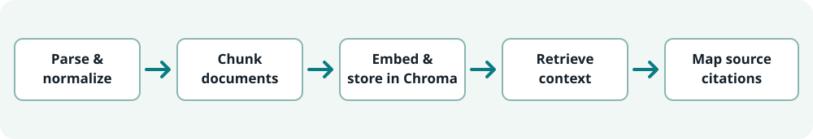

Pillar 1 · AI & Machine Learning Systems
AI Research Assistant
An in-development retrieval-augmented generation (RAG) prototype that indexes documents in Chroma and maps answer citations to retrieved source metadata. Answer faithfulness has not been independently evaluated.
RAG Ingestion & Retrieval Pipeline
The system operates as an end-to-end Python microservice orchestrating document parsing, token-aware chunking, vector embedding, and similarity search:

- 1. Document IngestionParses PDF, DOCX, and TXT documents and records source location metadata for retrieval.
- 2. Token-Aware ChunkingUses token-aware chunks with a configured default of 700 tokens and 15% overlap; boundaries and metadata are preserved where available.
- 3. Chroma Dense IndexingGenerates dense mathematical embeddings for each chunk and indexes them into a persistent Chroma vector database collection.
- 4. Similarity RetrievalExecutes cosine distance search against indexed embeddings to retrieve the top-k most relevant text chunks for a given query.
- 5. Answer and Citation MappingPasses retrieved context to the answer generator and maps citation markers back to source metadata. Citation presence alone does not verify factual faithfulness.
Harness & Engineering Implementation
Engineered with a clean Python service architecture: modular ingestion workers, decoupled vector storage abstractions, and a FastAPI harness exposing query and document upload endpoints.